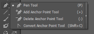
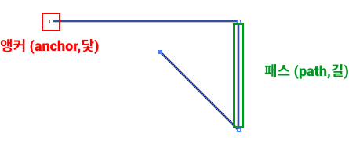
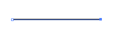
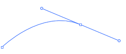
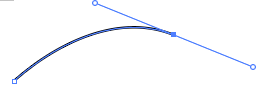

PEN TOOL
How to open

펜툴 탭 꺼내기 : P
펜툴을 활용하여 선이나 도형을 그릴 수 있습니다.
펜 툴은 기본적으로 좌측상단에 위치하고 있으며,
펜툴을 누르면 오른쪽과 같은 모습을 볼 수 있습니다.
순서대로 펜툴, 앵커 포인트를 추가하는 툴, 앵커 포인트를 제거하는 툴,
곡선을 모서리로 만드는 툴입니다.
선택툴을 활용하여 개체와 그룹을 클릭하거나 그 위로 드래그하여
개체와 그룹을 선택할 수 있습니다.
기초용어

직선 그리기

펜툴을 선택 후, 한 점을 찍고 다른 점을 찍을 경우 선을 그릴 수 있습니다.
Shift를 누른 후 다른 점을 찍을 경우 직선을 그릴 수 있습니다.
곡선 그리기


펜툴로 클릭한 상태에서 드래그(끌기)하면점 양쪽에 handle이라는 것이 생기고 곡선이 생깁니다.
이때 handle을 길게 늘리거나 줄이거나, 방향을 돌리면 곡선 모양이 바뀝니다.